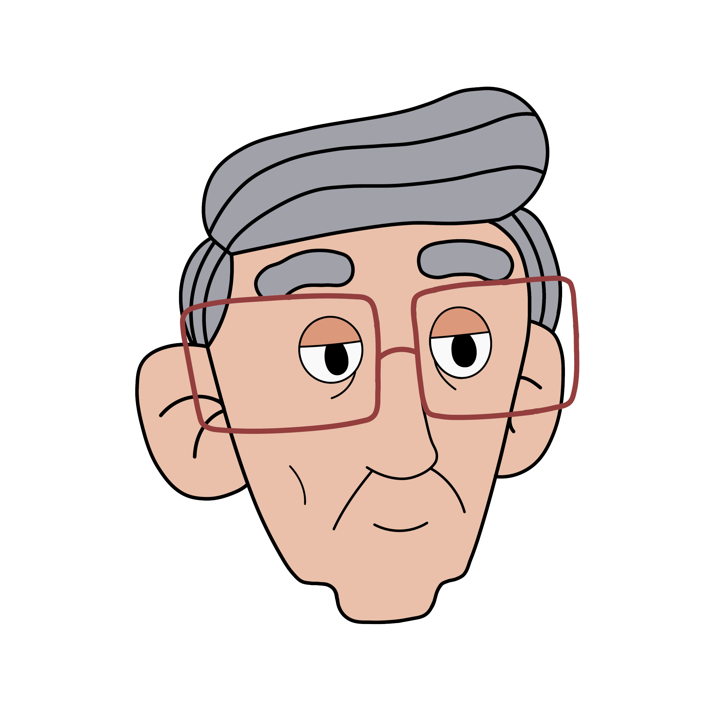

Vovkin Face Features

Vovkin stickers
قلنا لك قريبًا ليه الإستعجال ؟


Vovkin body



الجد العصبي ، متبني بيردي العصفورة الصغيرة ، يكره الإزعاج و بالأخص تلفاز فرايزي و ضحكته و دائمًا نراه ذاهبًا إلى عش فرايزي ليوبخه على الإزعاج و لكن ينتهي المطاف به جالسًا على الكرسي و مستمتعًا بمتابعة التلفاز
The angry grandfather , He adopted the little bird Birdie , He hates noise and especially Friezy's TV and his laughter, and we always see him going to Friezy's nest to scold him for the noise, but he ends up sitting on the chair enjoying watching TV.